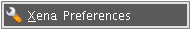
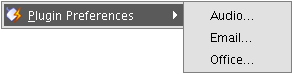
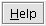
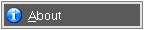
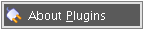

Close the current session and exit Xena.
Close the current session and exit Xena.


Set the destination location for files normalised by Xena. This must be set before Xena can normalise any files.
Set the Xena log file location. Xena will not continue if this location is left blank.
(See Set Preferences for more details.)

The Xena normaliser plugins such as Audio, Email and Office contain user adjustable settings.
Each may be configured at this menu by selecting the plugin from the list.
(See Set Up Plugins for more details.)


Xena's integrated help documents.

Version and development team information.

Normaliser plugins and their version numbers.